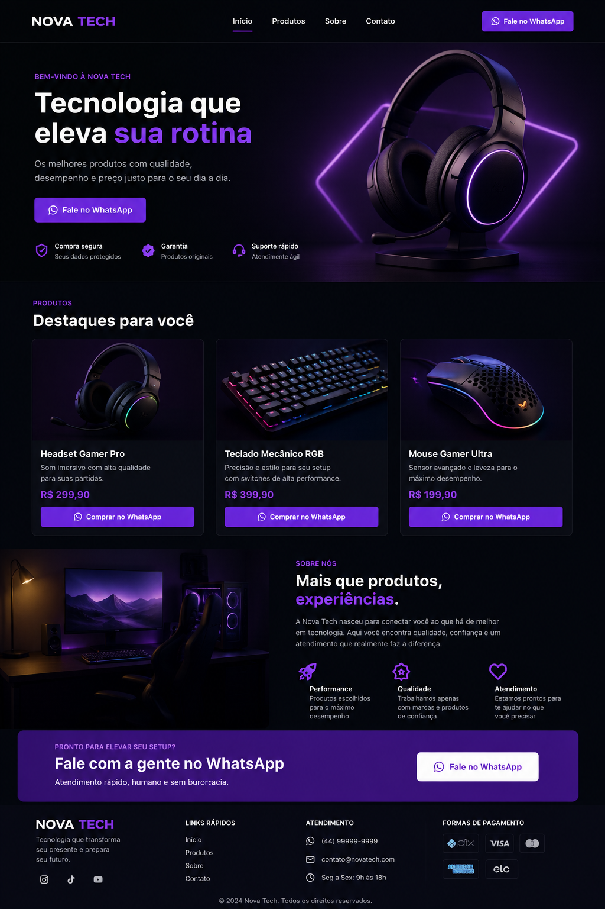

Desenvolva a NewTech, uma loja gamer moderna e profissional, enquanto aprende HTML e CSS do zero com uma metodologia prática, visual e focada em portfólio.
<header>
<nav>
<a href= "https://wa.me/5541988247728" >
Fale no WhatsApp
</a>
</nav>
</header>

Durante a mentoria você desenvolverá uma landing page gamer moderna inspirada em interfaces profissionais reais, aprendendo estruturação, estilização e refinamento visual.
Dev e apaixonada por interfaces modernas. Essa mentoria foi criada para ensinar HTML e CSS de maneira prática, profissional e visualmente refinada, simulando projetos reais do mercado.
Aprenda HTML, CSS e JavaScript através de aulas organizadas visualmente, com progresso salvo e interface premium.
Uma experiência de aprendizado pensada para iniciantes: visual sofisticado, explicações claras e prática real.